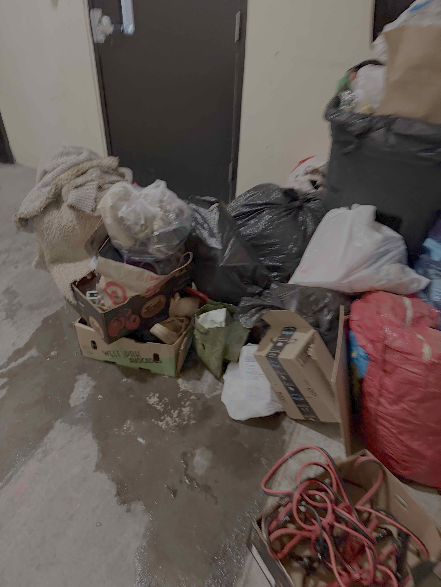

JUN 08 · 2026 · ~1:21 AM
Fire-alarm record supplied by the resident
A user-supplied CrimeRadar link identifies another Congressional Village fire-alarm dispatch. The exact transcript should be checked against the source page.
Open source record ↗Public evidence index · Rockville, Maryland
This page organizes publicly available dispatch references and contemporaneous communications associated with Residences at Congressional Village. It distinguishes reported facts, attributed statements, and unresolved questions.
Public dispatch references
A user-supplied CrimeRadar link identifies another Congressional Village fire-alarm dispatch. The exact transcript should be checked against the source page.
Open source record ↗CrimeRadar’s indexed page shows a routine fire-alarm dispatch near Halpine Road, naming Paramedic 703 Bravo and Tower 703.
Open source record ↗CrimeRadar’s indexed page shows a dispatch near Halpine Road, naming Engine 700-23 and Rescue Squad 703. This page does not determine fire cause.
Open source record ↗Chronology
The public dispatch records and the contemporaneous management/tenant communications describe overlapping dates but do not, by themselves, establish causation or a complete incident count.
Public CrimeRadar record for a Congressional Village residence.
User-supplied CrimeRadar link identifies another Congressional Village fire-alarm record.
Public CrimeRadar record on the date identified in later correspondence as the apartment fire.
Contemporaneous correspondence describes repeated alarms, posted emergency notices, smoke, and trash conditions; photographs were sent in the thread.
A Nextdoor post reports frequent alarms and asks where to complain. It is resident/community reporting, not independent technical verification.
Contemporaneous photographs
These public copies were attached to the May 2026 safety correspondence and were taken after the April 18 fire. The preserved originals remain separate; public copies have been stripped of identifying metadata.



Method & limits
Dates, dispatch wording visible in public records, source links, and clearly labeled attributed communications.
The MoCo Show’s April 18 report describes the apartment fire, sprinkler activation, injury, and displacement of eight units.
No claim that recurring alarms caused the fire, that every dispatch was found, or that September reports describe the same technical defect.
{kind=link}